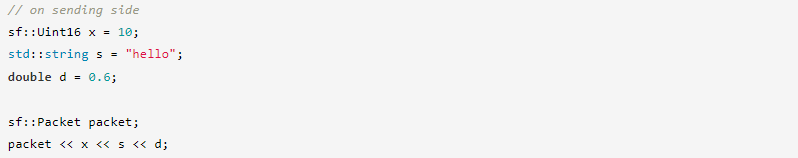
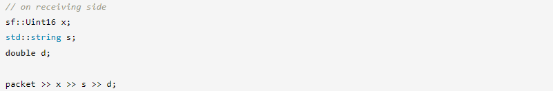
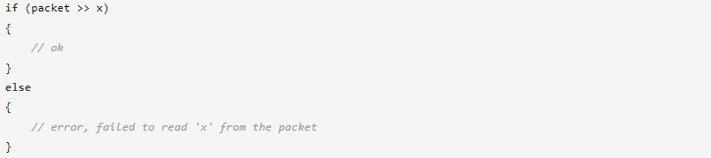
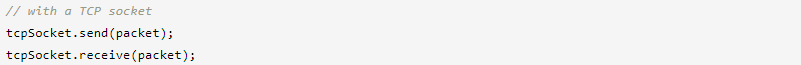
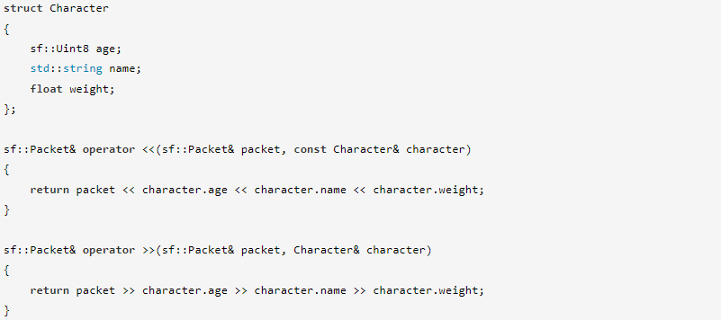
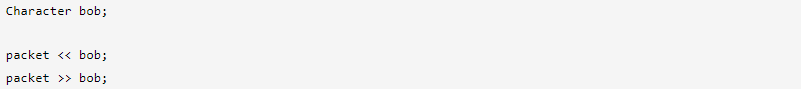
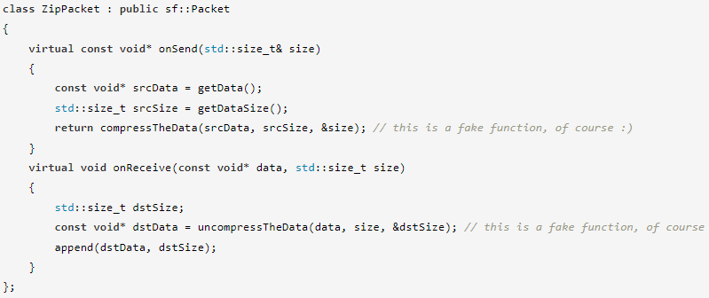
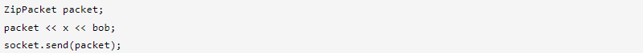

Обмен данными в сети сложнее, чем кажется. Причина в том, что могут быть задействованы разные машины с разными операционными системами и процессорами. Если вы хотите надежно обмениваться данными между этими разными машинами, возникает несколько проблем.
Первая проблема — порядок байтов. Порядок байтов — это порядок, в котором конкретный процессор интерпретирует байты примитивных типов, занимающие более одного байта (целые числа и числа с плавающей запятой). Существует два основных семейства: процессоры с прямым порядком байтов, которые сначала сохраняют старший байт, и процессоры с прямым порядком байтов, которые сначала сохраняют младший значащий байт. Есть и другие, более экзотические порядки байтов, но вам, вероятно, никогда не придется иметь с ними дело.
Проблема очевидна: если вы отправляете переменную между двумя компьютерами, порядок следования байтов которых не совпадает, они не увидят одно и то же значение. Например, 16-битное целое число «42» в записи с прямым порядком байтов равно 00000000 00101010, но если вы отправите его на машину с прямым порядком байтов, оно будет интерпретировано как «10752».
Вторая проблема — размер примитивных типов. Стандарт C++ не устанавливает размер примитивных типов (char, short, int, long, float, double), так что, опять же, между процессорами могут быть различия — и они есть. Например, тип long int может быть 32-битным на одних платформах и 64-битным на других.
Третья проблема связана с тем, как работает протокол TCP. Поскольку он не сохраняет границы сообщения и может разделять или объединять фрагменты данных, получатели должны правильно реконструировать входящие сообщения перед их интерпретацией. В противном случае могут произойти плохие вещи, такие как чтение неполных переменных или игнорирование полезных байтов.
Вы, конечно, можете столкнуться с другими проблемами сетевого программирования, но это проблемы самого низкого уровня, которые придется решать почти всем. Именно по этой причине SFML предоставляет несколько простых инструментов, позволяющих их избежать.
Поскольку примитивные типы не могут надежно обмениваться в сети, решение простое: не используйте их. SFML предоставляет типы фиксированного размера для обмена данными: sf::Int8, sf::Uint16, sf::Int32 и т. д. Эти типы являются просто определениями типов для примитивных типов, но они отображаются на тип, который имеет ожидаемый размер в соответствии с Платформа. Так что их можно (и нужно!) безопасно использовать, когда вы хотите обмениваться данными между двумя компьютерами.
SFML предоставляет только целочисленные типы фиксированного размера. Типы с плавающей запятой обычно также должны иметь свой эквивалент фиксированного размера, но на практике это не требуется (по крайней мере, на платформах, где работает SFML), типы float и double всегда имеют одинаковый размер, 32 бита и 64 бита соответственно.
Две другие проблемы (порядок байтов и границы сообщений) решаются с помощью специального класса для упаковки ваших данных: sf::Packet. В качестве бонуса он предоставляет гораздо более приятный интерфейс, чем старые простые байтовые массивы.
Пакеты имеют программный интерфейс, аналогичный стандартным потокам: вы можете вставлять данные с помощью оператора << и извлекать данные с помощью оператора >>.
 В отличие от записи, чтение из пакета может завершиться ошибкой, если вы попытаетесь извлечь больше байтов, чем содержит пакет. Если операция чтения не удалась, устанавливается флаг ошибки пакета. Чтобы проверить флаг ошибки пакета, вы можете протестировать его как логическое значение (так же, как вы делаете со стандартными потоками):
Отправка и получение пакетов так же просты, как отправка/получение массива байтов: сокеты имеют перегрузку отправки и получения, которые напрямую принимают sf::Packet.
Пакеты решают проблему «границы сообщения», что означает, что когда вы отправляете пакет через TCP-сокет, вы получаете точно такой же пакет на другом конце, он не может содержать меньше байтов или байтов из следующего пакета, который вы отправляете. Однако у него есть небольшой недостаток: чтобы сохранить границы сообщения, sf::Packet должен отправить несколько дополнительных байтов вместе с вашими данными, что означает, что вы можете получить их с помощью sf::Packet только в том случае, если хотите, чтобы они были правильно декодированы. . Проще говоря, вы не можете отправить пакет SFML получателю пакета, отличного от SFML, он также должен использовать пакет SFML для получения. Обратите внимание, что это относится только к TCP, с UDP все в порядке, поскольку сам протокол сохраняет границы сообщений.
Пакеты имеют перегрузки своих операторов для всех примитивных типов и наиболее распространенных стандартных типов, но как насчет ваших собственных классов? Как и в случае со стандартными потоками, вы можете сделать тип «совместимым» с sf::Packet, предоставив перегрузку операторов << и >>.
Оба оператора возвращают ссылку на пакет: это позволяет объединять вставку и извлечение данных.
Теперь, когда эти операторы определены, вы можете вставлять/извлекать экземпляр Character в/из пакета, как и любой другой примитивный тип:
Пакеты предоставляют хорошие функции поверх необработанных данных, но что, если вы хотите добавить свои собственные функции, такие как автоматическое сжатие или шифрование данных? Это легко сделать, унаследовав от sf::Packet и переопределив следующие функции:
Эти функции обеспечивают прямой доступ к данным, так что вы можете преобразовать их в соответствии с вашими потребностями.
Вот макет пакета, который выполняет автоматическое сжатие/распаковку:
Такой класс пакетов можно использовать точно так же, как sf::Packet. К ним также будут применяться все перегруженные операторы.
